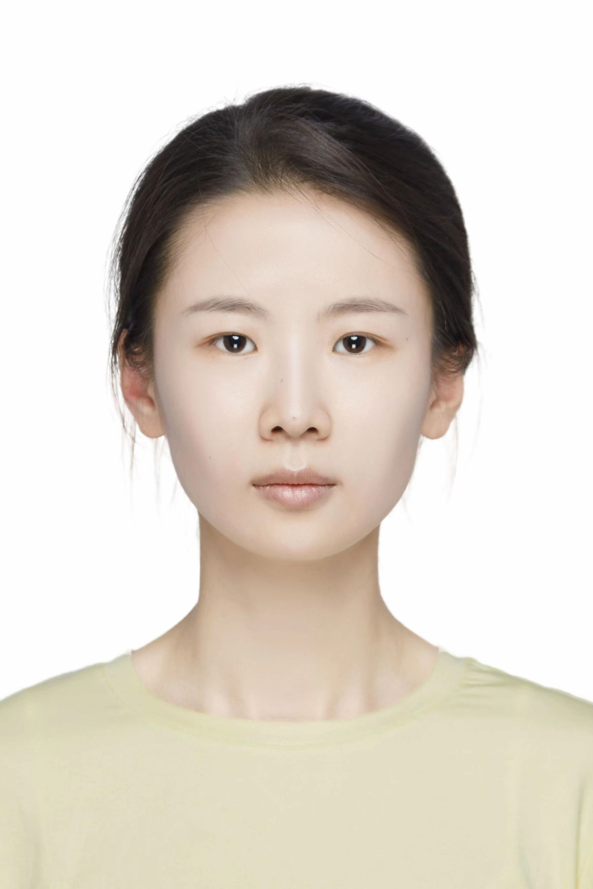

|

|
杨燕妮
助理教授，硕士生导师
山东大学，计算机科学与技术学院
中国，青岛
Email: yanniyang@sdu.edu.cn
yan-ni.yang@connect.polyu.hk
|
招生意向:
全年招收【硕士研究生】【本科科研助理】，有较强的学习科研自驱力（self-motivation），能力要求：数学、编程能力较强，同时欢迎有信号处理背景、电子通信背景、喜欢动手做硬件的同学，会为表优异的同学们提供海内外（参加各地的学术会议，前往新加坡、中国香港等地交流访问）交流的机会，有意向同学欢迎通过email发送简历。
主打“你积极主动 我认真配合”的学生-导师关系，希望同学们都有充分的自驱力！我们共同努力！
个人简介
杨燕妮博士于2021年在香港理工大学电子计算学系取得博士学位，师从曹建农教授。2019年至2020年期间在MIT Media Lab开展交流访问，Supervisor: Prof. Alex Pentland。2021年至2022年期间在香港理工大学任博士后研究员，2014年和2017年于中国海洋大学分别获得电子信息工程和计算机应用技术专业学士和硕士学位。
主要研究方向为智能感知、普适计算、移动计算。
研究方向
【智能感知、无线感知】【普适计算】【移动计算】
一些有趣的项目： 动起手来感知一切 (Get your hands dirty!)
|
利用低成本扬声器和麦克风实现液体识别
（原理：液体成分对声音的吸收作用，提取液体的声音吸收模式的“指纹”）
|
利用RFID实现运动和呼吸行为的同步监测
（挑战：微小的呼吸行为会被大幅运动行为淹没，你觉得要怎么解决？）
|
|
利用商用WiFi设备实现非接触式呼吸监测
（原理：呼吸时胸部的周期性起伏改变WiFi信号的传播路径和能量）
|
利用毫米波mmWave雷达实现多机器同步振动监测
（未解决的问题：因为振动幅度小，容易被噪音淹没，如何实现远距离的振动监测？）
|
|
难逃掌心：基于手掌轮廓的非侵入式射频识别（RFID）用户识别
（原理：从RFID信号中捕捉手掌结构的独特特征）
（由谢松荧同学在大三阶段、银江源同学在大四阶段完成，江源现入职华为）
|
基于无线信号的穿墙有线音频监听
（原理：在耳机线中偷偷的插入一个微小的场效应管，用无线信号收发器来捕捉在耳机线声音对场效应管的信号调制）
（由王庚霖同学在大四阶段完成，现于香港中文大学攻读博士学位）
|
代表性论著（*通信作者）
[谷歌学术]
专著
-
Jiannong Cao, Yanni Yang, "Wireless Sensing: Principles, Techniques and Application", Springer, ISBN: 978-3-031-08344-0, Aug 2022.
论文
-
Yanni Yang, Pengfei Hu, Jiaxing Shen, Haiming Cheng, Zhenlin An, Xiulong Liu, "Privacy-preserving human activity sensing: A survey", High-Confidence Computing, Jan 2024.
-
Yanni Yang, Zhenlin An, Jiannong Cao, Yanwen Wang, Pengfei Hu, Guoming Zhang, Xiuzhen Cheng, "Jump out of Resonance: A Practical NFC Tag Fingerprinting Scheme", IEEE Transactions on Mobile Computing, Jan 2024.
-
Yanni Yang, Genglin Wang, Zhenlin An, Pengfei Hu, Xiuzhen Cheng, Guoming Zhang, "RF-Parrot: Wireless Eavesdropping on Wired Audio", IEEE INFOCOM, May 2024.
-
Yanni Yang, Jiannong Cao, Zhenlin An, Yanwen Wang, Pengfei Hu, Guoming Zhang, "NFChain: A Practical Fingerprinting Scheme for NFC Tag Authentication", IEEE INFOCOM, May 2023.
-
Yanni Yang, Huafeng Xu, Qianyi Chen, Jiannong Cao, Yanwen Wang, "Multi-Vib: Precise Multi-point Vibration Monitoring Using mmWave Radar", ACM IMWUT/UbiComp, Jan 2023.
-
Yanni Yang, Yanwen Wang, Jiannong Cao, Jinlin Chen, "HearLiquid: Non-intrusive Liquid Fraud Detection Using Commodity Acoustic Devices", IEEE Internet of Things Journal, Jan 2022.
-
Yanni Yang, Jiannong Cao, Yanwen Wang, "Robust RFID-based Respiration Monitoring in Dynamic Environments", IEEE Transactions on Mobile Computing, Aug 2021.
-
Yanni Yang, Jiannong Cao, Xiulong Liu, Xuefeng Liu, “Door-Monitor: Counting In-and-out Visitors with COTS WiFi Devices”, IEEE Internet of Things Journal, Dec 2019.
-
Yanni Yang, Jiannong Cao, Xiulong Liu, “ER-Rhythm: Coupling Exercise and Respiration Rhythm Using Lightweight COTS RFID”, ACM IMWUT/UbiComp, Dec 2019.
-
Yanni Yang, Jiannong Cao, Xiulong Liu, Xuefeng Liu, “Multi-Breath: Separate Respiration Monitoring for Multiple Persons with UWB Radar”, IEEE COMPSAC, 2019.
-
Yanni Yang, Jiannong Cao, Xuefeng Liu, Xiulong Liu, “Wi-Count: Passing People Counting with COTS WiFi Devices”, IEEE ICCCN, 2018.
-
Yanni Yang, Jiannong Cao, Xuefeng Liu, Xiulong Liu, “Multi-person Sleeping Respiration Monitoring with COTS WiFi Devices”, IEEE MASS, 2018.
-
Juncen Zhu, Jiannong Cao, Yanni Yang*, Wei Ren, Huizi Han, "mmDrive: Fine-Grained Fatigue Driving Detection Using mmWave Radar", ACM Transactions on Internet of Things, July 2023.
-
Haiming Cheng, Wei Lou, Yanni Yang, Yi-pu Chen, Xinyu Zhang, "TwinkleTwinkle: Interacting with Your Smart Devices by Eye Blink", ACM IMWUT/UbiComp, Jun 2023.
-
Shan Jiang, Jiannong Cao, Hanqing Wu, Yanni Yang, "Fairness-based packing of industrial IoT data in permissioned blockchains", IEEE Transactions on Industrial Informatics, Dec 2020.
-
Xiulong Liu, Jiannong Cao, Yanni Yang, Wenyu Qu, Xibin Zhao, Keqiu Li, Didi Yao, "Fast RFID Sensory Data Collection: Trade-off Between Computation and Communication Costs", IEEE/ACM Transactions on Networking, May 2019.
-
Hanqing Wu, Jiannong Cao, Yanni Yang, Cheung Leong Tung, Shan Jiang, Bin Tang, Yang Liu, Xiaoqing Wang, Yuming Deng, "Data Management in Supply Chain Using Blockchain: Challenges and A Case Study", IEEE ICCCN, 2019.
-
Shan Jiang, Jiannong Cao, Hanqing Wu, Yanni Yang, Mingyu Ma, Jianfei He, "BlocHIE: a BLOCkchain-based platform for Healthcare Information Exchange", IEEE SMARTCOMP, 2018.
项目
讲授课程
学术活动与服务
CCF普适计算专委会执行委员、ACM SIGBED China委员
Sensors专刊客座编辑、IEEE ICMC 宣传主席、IEEE ICPADS 2020 网络主席
期刊会议审稿人： ACM Computing Surveys, IEEE Trans. on Mobile Computing, IEEE Trans. on Human-Machine Systems, IEEE Trans. on Big Data, High-Confidence Computing, Buildsys 2022, ICDCS 2019, Percom 2019, WWW 2019